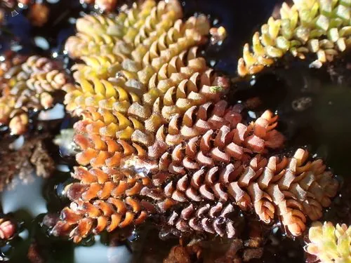

水生植物 · 植物界
满江红 Azolla pinnata

满江红科漂浮水生蕨类，叶片细小、秋冬转红如铺红毯，与固氮蓝藻共生，是稻田绿肥和饲料，广布亚洲。
- 分类
- 门蕨类植物门纲水龙骨纲目槐叶苹目科满江红科属满江红属
- 栖息环境
- 水田、池塘、河沟等静水水面，喜温暖、富营养水体
- 地理分布
- 广布亚洲、非洲与澳大利亚，中国南方水田常见
- 保护级别
- 暂无评估
物种志
满江红为满江红科满江红属漂浮水生蕨类植物，植株漂浮于水面，呈三角形或圆形小片，直径 1–2 厘米，叶片细小、覆瓦状排列，绿色，秋冬低温时转为红色或紫红色。孢子果生于水下，夏秋成熟；它不开花，靠孢子繁殖，也可靠断枝快速增殖。
满江红广布于亚洲、非洲和澳大利亚的淡水水域，中国南方水田、池塘常见，喜温暖、阳光充足和富营养的静水，繁殖极快，几天就能覆盖一片水面。它与固氮蓝藻共生，能把空气中的氮固定到植株体内，因此是稻田重要的绿肥，也可作饲料。满江红秋冬叶色转红，成片时如水面铺了一层红毯；在部分水域大量繁殖时也可能影响水质和航运。
形态与习性
- 株高漂浮小片，直径 1–2 厘米
- 孢子期夏秋，孢子果生于水下
- 光照喜充足阳光
- 水分漂浮于静水或缓流水面
- 土壤不依赖土壤，直接吸收水中养分
- 繁殖断枝与孢子繁殖，速度极快
- 主要用途稻田绿肥、饲料、水体净化
趣味知识
- 满江红与固氮蓝藻共生，能固定空气中的氮，是稻田绿肥。
- 秋冬低温时叶片转为红色或紫红色，成片如水面红毯，“满江红”由此得名。
- 它属于蕨类植物，不开花，靠孢子和断枝繁殖。
- 满江红繁殖极快，几天就能覆盖一片水面，也需防止过度蔓延。